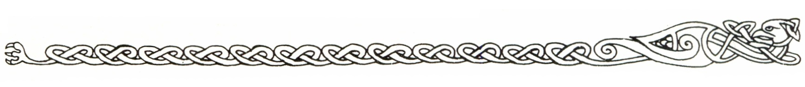
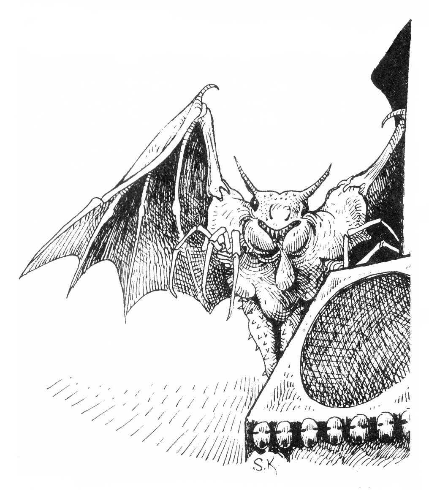
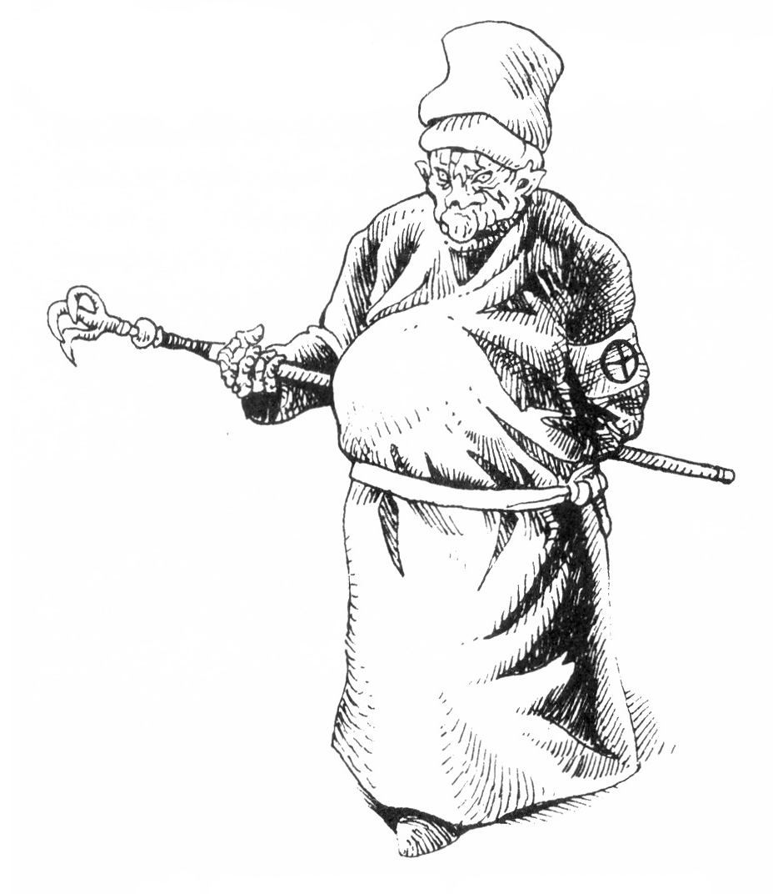
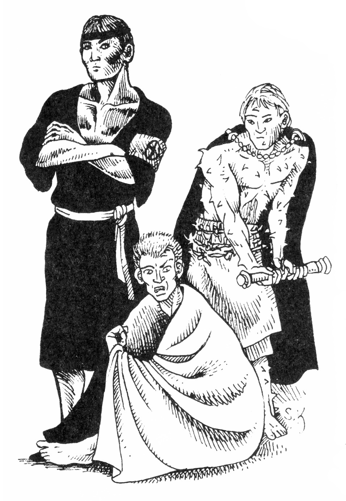
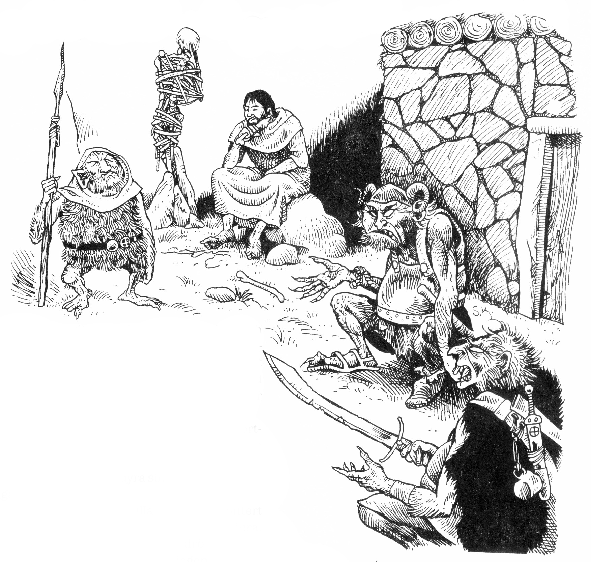
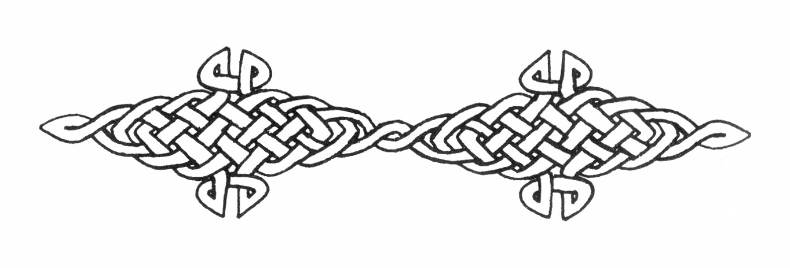

09. Järntornet
I detta avsnitt beskrivs shagulitersekten, deras tempel, tjänare och verksamhet. Någon speciell inledning till deläventyret finns inte eftersom möjligheterna nu blivit många och äventyrarna själva får göra upp en plan om hur sekten ska attackeras.
Shagulitersekten
För mer än hundra år sedan vandrade en gråklädd mystiker och nekromantiker in i staden Vumbra på ön Trinsmyra. Hans namn var Shagul, och han ägde en vision om att grunda en odödlig härskarras med makt över världens levande och döda. Tillsammans med likasinnade grundade han en sekt för att finna tillvarons gömda hemligheter.
Shagulitersekten kom snart att hatas och fruktas. Rykten om obeskrivbara ritualer spreds på Trinsmyra, tills öborna slutligen fördrev sekten.
I det fördolda hade Shagul redan planerat en reträtt och sekten avseglade mot Marjura, där man lejt dvärgar att bygga ett undangömt tempel i Dymrabergen.
Under lång tid hördes inte mycket av sekten, men då Trakorien ockuperade svaveldalen stötte man åter på shaguliterna som nu var redo att öka sin makt bland människorna...
Verksamhet
Shaguliternas intressen kan sammanfattas till följande huvudpunkter:
- Traditionell nekromanti enligt magiboken.
- Symbiotiska experiment. Man söker efter alger eller andra mikrober som kan leva i människokroppen och tillföra den nya egenskaper. Shaguliternas gröna hudfärg beror på en grönalg som håller dem med syre och näring medan ämnesomsättningens slagg tas om hand.
- Yogaliknande kroppskontroll. Sektmedlemmarna söker uppnå viljans totala kontroll över varje kroppsfunktion ner på minsta cellnivå.
- Anatomiska studier. Man vill öka sitt kunnande om människokroppens funktion och letar efter viljans och livsgnistans läge för att kunna tvinga andra varelser till lydnad. Man föredrar vivisektion, det vill säga att dissekera sina offer levande. Speciellt intresserade är man av sällsynta arter och anatomiskt avvikande personer.
- Psykologiska experiment. Man söker utforska medvetandets gränser, hur mycket en intelligent varelse tål innan den brister etc.
- Transferritualer. Man söker kontakt med andra världar för att lära nya sanningar och skaffa mäktiga bundsförvanter.
- Dödsstudier. Sekten utforskar döden, hur den ska övervinnas och undvikas. Framför allt vill man förlänga sina egna liv.
- Politisk infiltration. Sektens mål är att leda världen och därför söker man inflytande bland härskande grupper. Noviserna lever alltid en längre tid ute i samhället för att lära sig hur det kan styras.
Shagulism
Sektmedlemmarnas speciella förmågor har för enkelhetens skull sammanställts till en färdighet (kategori B) kallad Shagulism. För att kunna lära sig Shagulism krävs att man helt ger upp sin normala tillvaro och underkastar sig sektens omformning av kropp och psyke. Förändringar i grundegenskaper är kumulativa.
FV 1: Grundegenskaperna FYS och PSY ökas med 1. Sömn- och matbehov minskar till 2/3
FV 2: Grundegenskaperna FYS, PSY och STY ökas med 1. Huden blir lätt grönaktig och strävare än normalt. Den ger ett naturligt skydd 1. Sömnbehovet bortfaller helt. Varelsen behöver bara andas någon gång per minut.
FV 3: Grundegenskaperna FYS, PSY och STY ökas med 1. Varelsen får mörkersyn, men ögonen lyser då röda i mörker. Shaguliten utbildar klor på fingrarna. Dessa ger 1T4 skada per hand.
Varelsens hud har en övervägande grön färg och är hård som läder, vilket ger ett naturligt skydd 2. Matbehovet ändras och minskar till 1/10. Varelsen behöver bara tillföra vissa salter och vitaminer någon gång per vecka.
Personen blir okänslig för normala vädertemperaturer. Shagulitens kropp kan själv stoppa alla blödningar, dvs färdigheten Första hjälpen utförs automatiskt. Shaguliten får en egenskap som motsvarar hjälteförmågan Orädd.
FV 4: Grundegenskaperna FYS, PSY och STY ökas med 1. Shaguliten kan återanvända sin urin och behöver bara dricka ett par deciliter färskt vatten varje vecka. Som en bieffekt får han en obehaglig kroppslukt som kan uppfattas på ca 5 m håll.
Huden blir mörkare grön och hård som bark. Den ger ett naturligt skydd 3. Varelsens kropp förmår själv ta hand om alla sjukdomar och gifter. Varelsen behöver inte längre andas och klarar sig utan föda ett par månader om den kunnat lägga upp ett lager av mineraler. Shaguliten får egenskaper som motsvarar hjälteförmågorna Tålig, Snabbläkning och Stålblick.
FV 5: Grundegenskaperna FYS, PSY och STY ökas med 1. Varje bit av shagulitens kropp agerar självmant för helhetens bästa och delar av den lever vidare på egen hand om de huggs av. Krossvapen ger normal skada, men icke—magiska egg- och stickvapen ger bara halv skada eftersom vävnaderna delvis kan återfogas sedan eggen passerat.
Shaguliten kan regenerera skador som ett troll, men mycket långsammare, med en hastighet av 1 KP i timmen. Sliter man honom i bitar dör han inte utan slingrar sig samman igen om man inte bränner bitarna.
Shaguliten kan självmant låta kroppen upplösas till en grön, slemmig massa som kan sippra fram med en hastighet av 5 m/minut. Förvandlingen innebär att halva KP förloras. Förstörs mer än hälften av massan kan kroppen inte återförenas igen. Shaguliten kan bilda klonvarelser.
Shagulitersektens organisation
Shagulitersekten består bara av män. Medlemmarna rangordnas efter vilket färdighetsvärde de uppnått i Shagulism, men bara ett bestämt antal i varje klass får samtidigt finnas.
Noviserna har inte tillträde till templet utan undervisas på andra platser och agerar i samhället tills de är mogna för invigning.
Titel FV Shagulism Antal totalt Antal Marjura Skolvärde Nekromanti
Novis 1 13 2 7
Huligan 2 11 5 12
Mogul 3 7 4 16
Columna 4 5 3 20
Patriark 5 3 2 22
Alla shaguliter på Marjura utom noviserna och Columna Malek Mangus befinner sig för det mesta i Järntornet. De finns namngivna och beskrivna med värden antingen på monsterlistan eller i detta avsnitt.
Shaguliternas nekromanti
Shaguliterna praktiserar och lär ut alla de nekromantiska besvärjelser som beskrivs i magiboken, plus de allmänna formlerna. Medlemmarna lär sig besvärjelserna allteftersom de uppnår tillräckligt högt skolvärde.
För att bestämma en enskild shagulits magiska förmåga används följande schablon: Shaguliten behärskar alla besvärjelser vars skolvärde understiger hans FV Nekromanti. Skicklighetsvärdet beräknas med formeln:
Skicklighetsvärde = FV Nekromanti — besvärjelsens skolvärde + 3.
Exempel: Columna Malek Mangus har FV20 i Nekromanti. Formeln TALA MED DÖD har Skolvärde 11. Malek Mangus skicklighetsvärde i besvärjelsen blir alltså: 20-11+3:12.
Då columner och patriarker använder magi kan de spara sina egna PSY och istället dra kraft från lägre shaguliter eller från sin personliga horndemon. PSY—åtgången blir i så fall dubbelt så stor som normalt. En förutsättning är att medhjälparen befinner sig högst 50 m från besvärjaren och är med på att offra sina PSY. Dras kraft från en horndemon måste den slå en bärsärkskontroll.
Horndemonerna
Från ett annat universum har de högsta shaguliterna lyckats kalla varsin mäktig bundsförvant till sin sida. Bandet mellan shagulit och horndemon är ett mentalt blodsbrödraskap så starkt att de står i ständig telepatisk kontakt med varandra. Kopplingen innebär till och med att då den ene blodsbrodern får en skada, drabbas den andre av en liknande skada, men minskad till 1/3 rundat neråt.
Då rollpersonerna möter en horndemon måste SL hålla i minnet att varelsen dels följer sin vildsinta natur, dels styrs av sin analyserande shagulitbroder. Bara om varelsen råkar i bärsärkaraseri ger den sig helt hän åt instinkten. En horndemon måste alltid slå en bärsärkskontroll när den fångat ett byte, om dess shagulitbroder försöker hindra den från att tugga i sig offret. Det finns sammanlagt sex horndemoner på Marjura, varav en blivit kallad av misstag och lever i naturen som vildjägare.
Horndemonerna ger ett ytterligt främmande intryck. De är täckta av gulbruna fjäll och utsöndrar ett ammoniakluktande slem som kladdar av sig där de går fram.
Deras bröstkorg är kraftigt bepansrad. Vid skuldrorna är två fladdermusliknande vingar fästa och framför dessa sitter ett par korta armar som slutar i tre halvmeterlånga kloförsedda fingrar.
Varelsen har ingen hals, utan huvudet med överkäken fäster direkt på skuldrorna och har begränsad rörlighet. Från pannan skjuter två raka, spetsiga horn. Ögonen är stora, röda och halvgenomskinliga, men saknar struktur. De kan se i mörker.
Horndemonen har ingen näsa utan andas genom två vertikala slitsar som snörvlar då den blir upphetsad. Munnen är tredelad, med en fast överkäke och två snedställda underkäkar som ledar löst direkt mot bröstkorgen, men som också kan frikopplas. Från den tredje munvinkeln mellan underkäkarna rinner hela tiden ett brunt sekret ner över krävan som hänger under munnen som en veckad lädersäck.
Varelsens smala ben slutar i fågelliknande klor som lämpar sig dåligt att gå på, varför de helst håller sig över marken. Den muskulösa svansen med sina fenor fungerar som roder då demonen flyger.
Horndemonerna kan inte frambringa andra ljud än pipande tjut, men kommunicerar telepatiskt. De kan dock normalt inte läsa främlingars tankar.
Horndemonerna är utpräglade jaktvarelser. De fångar byte genom att störta ner från ovan och gripa offret med frambenens långa klor. När bytet sitter stadigt i famnen, kopplar de loss underkäkarna, vränger ut och in på krävan vars insida är täckt med vassa tänder, fångar in så stor del av bytet de når om och skär sönder det med malande tuggrörelser samtidigt som de suger i sig frigjorda vätskor.
Munnens muskler är mycket kraftiga och kan gapa runt föremål som är ca 60 cm i diameter, men varelsen kan inte bitas vanligt när underkäkarna är frikopplade.
Ofta spyr horndemonen upp galla över infångat byte för att underlätta matspjälkningen.
Varelserna har ett utmärkt luktsinne. De vädrar genom att slänga med sin långa tunga som fylls med luft och koncentrerade dofter, vilka sedan får pysa ut över nässlitsarna med ett osmakligt ljud. I självförsvar kan de bitas eller kasta upp etter på tre meters håll. Den som träffas av etter tar skada under 1T4 SR. Rustningar absorberar denna skada, men tappar 1 abs per SR som ettret verkar.
Horndemonerna lever i en hård värld där bara de dugligaste överlever. Hos dem delas levande varelser inte in i arter, utan stora mängder muterade individer föds ständigt och de mest lämpade överlever.
Präglade av denna tillvaro saknar horndemonerna all medkänsla och anser det självklart att den starkare äter den svagare. De förmår varken känna smärta eller fruktan, men finner det roande och intressant att framkalla dessa känslor hos andra. De har en mycket stark överlevnadsinstinkt.
Till vardags gör varelserna i stort sett som deras shagulitbroder säger, men om de misslyckas vid en bärsärkskontroll tar instinkten över.
I horndemonernas värld finns ingen växtlighet av vår typ, och varelserna är instinktivt försiktiga med allt grönt. De flyger aldrig ner i en grön skog eller angriper byte som gömmer sig i ett buskage. De tvekar likaså inför varelser klädda i grönt.

Horndemon
STY 1T6+15 19
STO 1T6+15 19
FYS 2T6+10 17
SMI 3T6 11
INT 1T4+6 10
PSY 3T6 11
KAR 1 1
SB 1T4
KP 18
Naturliga vapen CL Skada
Bett 15 1T8
Spy etter 15 1T4⨉1T4 SR
Malande kräva Fasthållning 1T10/SR
(s. E 53)
Naturligt skydd: Bröstkorg 4, Resten 2 Förflyttning: F 30/L 4 Färdigheter: Upptäcka fara 17, Finna dolda ting 15, Spåra 16. Särskilda förmågor: Okänslig för normala temperaturskiftningar, skadas ej av kemikalier (tex syror), tar halv skada av gift, kan inte bli skrämd, ogillar grönt.
Klonvarelser
Om en patriark med Shagulism FV 5 droppar saliv eller blod i en människas sår, börjar cellerna från hans kropp föröka sig som en grön svulst om inte offret lyckas med ett FYS—slag. (Fummel innebär att spridning sker och gröna dottersvulster dessutom böljar växa på 1-10 nya platser). Svulsternas tillväxt pågår 1T20 dagar. Varje dag förlorar den bitne en KP om han inte lyckas med ett svårt FYS—slag. Då tillväxten är avslutad, knoppas svulsten loss som en egen varelse, en klon av den ursprungliga shaguliten. Klonvarelser är pulserande, gröna missfoster som i sin oformlighet påminner om humanoider. De kravlar runt utan mening, har inga naturliga drifter, instinkter eller känslor. När något nytt kommer i deras väg står de och stirrar någon stund innan de tappar intresset och går iväg. Klonvarelser talar inte, försvarar sig inte om de blir angripna och tar inga initiativ. De finns bara till. Ibland ser man tårar i deras olikstora ögon, men ingen vet om de sörjer sin tillkomst eller bara saknar tårkanaler.
SL: Klonvarelser kan bara växa på människor. Försöker man skära bort en växande klonsvulst börjar tillväxten på nytt i såret om inte operatören lyckas med FV Läkekonst och såret brännes med eld. En utvuxen klonvarelse kan inte smitta nya offer.
Klonvarelse
Grundegenskaper: 1-6 i alla grundegenskaper Naturliga vapen och skydd: Inga Förflyttning: 1-6 Färdigheter: Inga
Viktiga Shaguliter
Prior Grafficanus Majus — patriark, 112 år
ALLMÄNT: Grafficanus är sektens nuvarande ledare och templets prior. Han har vissa färdigheter i mentalisternas skola kvar sedan ungdomsåren.
UTSEENDE: Priorn skiljer sig från övriga sektmedlemmar genom att vara klädd helt i violett och bära sin svampformade priorshatt på huvudet. Huden är djupt mossgrön och sprucken som åldrig bark. Ansiktsdragen har börjat flyta ut till en grotesk mask eftersom priorn inte längre lägger möda på att dirigera sina celler till sådana världsliga ändamål som ett propert yttre. Hans kropp är överviktig, krum och knotig. Håret har sedan länge fallit av.

DETALJER: Grafficanus bär alltid en manshög stav som slutar i en kraftig, trefingrad klo.
FV Upptäcka fara/Finna dolda ting - Klons fingrar rör sig.
KARAKTÄR: Grafficanus är något trött på tillvaron, men håller envist kvar vid makten som han inte unnar någon annan. Han har börjat bli misstänksam och svårlynt mot omgivningen. Ofta demonstrerar han sina stora kunskaper för att avskräcka andra från upproriska tankar. Varelser som inte är shaguliter betraktar han som boskap.
SL: Grafficanus är av den gamla stammen från Shaguls dagar och kan inte anpassa sig till nya kunskaper. Övermänniskan och det eviga livet tänker han allt mindre på.
Demonstaven
Grafficanus stav har i sin övre ände en permanent öppning till ett annat universum. Den klo man ser tillhör en rovlysten demonvarelse som stuckit in handen i vår värld i hopp om varmt kött.
Demonens STY är 45. Klon ger 1T3 + SB 3T6 i skada. Grafficanus FV med staven är 14.
Får demonen in en träff tar offret skada och måste dessutom klara ett normalt SMI-kast, annars lyckas odjuret gripa honom. Lyckas demonen därefter övervinna den gripnes styrka under 1T4 SR dras offret in i demonvärlden och slukas.
Demonarmen har naturligt skydd 5, men skadas bara av magiska vapen. Får den en skada drar sig klon tillbaka under 1T10 timmar. Det finns lika många procents chans som skadans storlek att den försvinner för alltid.
Gobrugda — patriark, 86 år
ALLMÄNT: Gobrugda är sektens andreman i rang, men skickligast av alla i Shagulism. Han kräver framför allt koncentration, stramhet och strävan mot perfektion av sina lärjungar. Gobrugda anser att Grafficanus är olämplig som sektledare, men vill inte splittra medlemmarna genom inre maktstrider. Han är övertygad om att tiden talar för honom och kan vänta.
UTSEENDE: Gobrugda liknar en skyltdocka, med formsköna och symmetriska, men samtidigt opersonliga drag. Hans ålder är omöjlig att gissa. Huden är helt slät, mörkt klargrön med nästan metallisk lyster. Håret är mörkt och välansat. Han klär sig i svart kimono med ett band runt pannan.
KARAKTÄR: Gobrugda är fåordig och allvarlig. Han är mycket uppmärksam och analyserande, noga med att aldrig ta något för givet eller slappna av. Speciellt misstänksam blir han om allt verkar flyta precis som det ska. Vetenskapen kommer för honom alltid före personliga hänsyn.
SL: Malek Mangus och Jomorref är nära allierade med Gobrugda, medan resten av sekten accepterar Grafficanus ledarskap.
Barbica — mogul, 67 år
ALLMÄNT: Barbica var ursprungligen munk, men drogs i sin ungdom till shaguliternas läror om fysisk fulländning.
På senare år har religiösa uppenbarelser fått honom att tvivla på sektens mål. I hemlighet odlar han planer på att rädda sin själ undan evig fördömelse genom att förråda sekten.
UTSEENDE: Barbica har behållit sitt gamla utseende med lätt sneda ögon, ljust hår och smalt ansikte. Han klär sig minimalt, med ett enkelt, grått tyg lindat runt höfterna, fasthållet av några varv bronstaggtråd.
Kroppen är senig och smidig, täckt av små taggar vilket givit hans namn.
KARAKTÄR: Barbica år tvehågsen och ofta melankolisk eller retlig. Helst drar han sig undan de andra sektmedlemmarna och ägnar sig åt yogaövningar eller meditation. Han finner det olustigt att experimentera med andra levande varelser, men vet samtidigt att ett öppet avståndstagande skulle innebära hans dödsdom.
SL: Om ett allvarligt hot mot sekten uppstår finns det stora chanser att Barbica byter sida och hjälper angriparna. Det ligger nära till hands att han offrar sitt liv i kampen.
Om angriparna är utsända i heligt uppdrag ber Barbica om frälsning för sin själ och ansluter sig med fanatisk glöd.
Gobrugda har länge anat Barbicas tvivel och håller ett vakande öga på honom.
Jomorref — huligan, 25 år (alias Fingolf Silverhamre)
ALLMÄNT: Detta är sonen till den trinsmyriske länsherren Gustald Silverhamre. Fingolf har anlutit sig till sekten mot faderns vilja.
UTSEENDE: Unga hårda drag, med stubbat hår och fanatiskt stirrande blick. Ljusgrön, sträv hud. Glömmer ofta att andas då han blir upphetsad, varvid rösten piper bort till intet innan han märker det.
KARAKTÄR: Högst ovillig att bli befriad av faderns lejda män. Jomorref är sällsynt okänslig för andra levande varelser och en av de mest lovande och hängivna i sekten. Han är patriarken Gobrugdas specielle gunstling.

Vägen till Järntornet
ALLMÄNT: Järntornet är shagulitersektens högkvarter och heliga tempel. Det är allmänt känt att Järntornet ligger i Dymrabergen på norra Marjura, men det exakta läget försöker shaguliterna hålla hemligt. Bara isjättarna, kvurerna, shaguliteranhängarna och dvärgarna kan visa vägen dit.
Templet ligger gömt i kratern efter ett stort meteoritnedslag. För att ta sig in i kratern måste man antingen flyga, klättra över randbergen eller ta sig genom ett av de två passen. Norra bergspasset är bara känt av kvurerna och därför obevakat. Det andra passet kallas Gethornspasset och ligger i sydost.
På kartorna över Järntornet finns de olika shaguliterna utplacerade, men denna placering är bara ett förslag eftersom de naturligtvis rör på sig. SL bör flytta om efter behag.
1. Gethornspasset
ÖVERBLICK: En brant stig leder upp mot två höga, spetsiga klippor som lutar in mot varandra i toppen. I passet mellan klipporna finns en smal passage.
VARELSER: 1-4 Marjurerorcher sitter i passet. De upptäcker normalt någon som närmar sig på 40—60 meters håll
2. Kratern
ÖVERBLICK (FRÅN GETHORNSPASSET): Innanför Gethornspasset öppnar sig en cirkelrund dalsänka vars plana yta ligger ett hundratal meter nedanför passets plan. Kratern är ca 600 m bred, och i dess mitt reser sig en hög, mörk klippa med en katedralliknande byggnad på toppen.
Från klippan mot randbergens södra vägg spänner en gracil bro sina smäckra valv högt över kraterytan. Vid brons andra ände skymtar eldar och ett stenhus på en klipphylla. I kraterns nordöstra del glimmar flammor till med jämna mellanrum. Ånga stiger i mängd mot himlen där den samlas som ett dystert lock genom vilket solen aldrig kan lysa. Därför ligger hela kratern ständigt i halvdunkel. Ingen växtlighet eller snö tycks få fäste på den plana slätten.
Från Gethornspasset fortsätter stigen söderut längs randbergens insida ner mot stenhuset vid brons ände.
DETALJER (FRÅN GETHORNSPASSET): Människoliknande varelser rör sig på klipphyllan vid stenhuset (på kraterns yta). Kraterytan tycks bestå av lava som är varm så att snön smälter då den landar.
FV Upptäcka fara/magi FJÄRRSYN — Stora fladdermusliknande varelser cirklar då och då runt centrumklippan och landar på byggnadens tak.
FV Lyssna — Vanvettiga skrik ekar svagt över slätten.
SL: Dimmolnen hänger vanligen på randbergens kant, men 20% av dagarna sänker de sig och lägger hela kratern i dimma. Då ser man naturligtvis inte ovanstående, men kan heller inte upptäckas från templet.
Det sitter alltid en horndemon på templets tak och håller utkik. Han varnar Shaguliterna om han ser något ovanligt. Shaguliterna tystar alla som upptäckt deras tempel.
Kraterns lavaskorpa varierar i tjocklek och är tunnast i nordöstra hörnet. Vandrar man ut på den måste man var 5:e minut slå högre än sin STO (5 BEP last räknas som en STO) med 1T20 + 14 för att inte trampa igenom. Trampar man igenom tar man 1T8 skada och måste klara ett SMI-kast för att inte helt sjunka ner i magman och förintas.
Risken för genomtramp är den bortglömda orsaken till att kratern sedan gammalt är tabu för jättarna. Basimor Armgrove kan lockas ut på lavan genom ett lyckat bruk av Övertala, men aldrig Stor-Thule.
3. Orchbaracken
ALLMÄNT: Shaguliterna har tagit de bästa krigarna från den lokala orcherstammen "Tummen-i-ögat" i sin tjänst för att utföra enklare sysslor som att sköta vakthållning och jaga experimentvarelser. Man har byggt en barack åt dem på klipphyllan där Shaguls grav ligger.
ÖVERBLICK: En stor stenlada utan fönster, men med en dubbelport på glänt. Två vita orcher sitter på vakt utanför dörren inbegripna i högljudda skrytsamheter. På en sten sitter en man i röda kläder och tuggar på ett köttben. Framför ett par stora portar i bergssidan står ytterligare en halvsovande orch. På den öppna platsen framför stenladan står ett uppstöttat skelett med sin högertumme inkörd i ögat.

DETALJER: FV Lyssna — Ett stort antal snarkningar hörs från ladans inre. Tittar man in ser man 1T20 + 5 orcher sova bland högar av lump, ben, vapen och skräp.
Nattetid är orcherna mer aktiva, medan mannen i rött försöker sova.
SL: Det tar 4 SR för orcherna i huset att hitta sina vapen och komma i stridsberedskap. Perrima känner igen mannen.
VARELSER: Marjurerorcherna och Melobin Vackre. Det är 10% chans att en horndemon eller shagulit finns på platsen.
Marjurerorcher
UTSEENDE: Marjurerorcherna liknar vanliga orcher (samma grundegenskaper), men har vit borst och mer primitiv utrustning. Oftast klär de sig i hudar eller läderrustning och använder stridsklubba, kort båge och dolk som vapen.
SL: Orcherna utför sina uppdrag i grupper om 2—8 individer.
Melobin Vackre — skrivare & skojare, 24 år
ALLMÄNT: Ursprungligen var Melobin skrivare och kopiatör på kejserliga biblioteket i Tricilve, man hans stora talanger som sol-och-vårare erbjöd ett lättsammare liv. Han valde att försörja sig som lärare åt rika damers bortskämda barn.
Sedan han hjälpt Shaguliterna med utpressning av en rådsdomare, anlitades han av sekten för att spela rollen som novis i Kmordatemplet på Marjura.
Melobin lyckades lura druiderna som godtroget välkomnade den unge sanningssökaren. Hans svek blev deras död, och själv stack han ner Perrimas syster Girinda den ödesdigra natten.
Efter templets fall insåg Melobin att hans eget liv inte längre hade något större värde för shaguliterna och bad desperat om att få bli novis i sekten. Man har placerat honom hos marjurerorcherna i väntan på beslut om hans öde. Där är han skyddad, men också fånge.
UTSEENDE: Melobin har ett vackert och förtroendeingivande yttre, med regelbundna drag och välansat, mörkt hår. Under vistelsen hos orcherna har dock skäggstubben växt och ansiktet fårats av sömnlöshet. Fortfarande går han klädd i Kmordadruidernas vinröda kläder, men de har blivit solkiga av orchernas orenhet.
KARAKTÄR: Melobin är i grunden en lat och bortskämd stadsbo som bara tänker på sig själv. Han har lätt för att fatta och är en expert i att bluffa sig fram genom att alltid bedyra sin lojalitet och sina ärliga avsikter.
Hos orcherna trivs han illa och ångrar bittert att han lät sig övertalas att komma till Marjura. Fruktan för en osäker framtid och drömmar om gamla goda tider lämnar honom ingen ro.
SL: Om äventyrarna angriper orcherna kommer Melobin att ropa på hjälp och förklara sig vara fånge. Perrima och han var älskande i Kmordatemplet och han vädjar till henne om hon är med. Systern Girinda misstrodde från början den vackre novisen.
FV Administration/juridik — En lagkunnig från Paratorna minns Melobin från rättegången i samband med utpressningsskandalen.
4. Gångbro
ÖVERBLICK (FRÅN ORCHBARACKEN): Från klipphyllan invid Shaguls grav leder en meterbred lättmetallbro ut över kraterslätten mot centrumklippan. Höjden är ca 30 m och det finns inga räcken.
DETALJER: Bropelarna vilar på breda fundament som avlastar tyngden.
SL: Personer måste klara ett PSY-slag var femte minut om de försöker gå över bron. Misslyckas de måste de sätta sig 1T4 minuter p g a svindel. Fummel innebär att man faller.
FV Finna dolda ting (kräver att man letar på rätt plats) — Den första pelaren har i sitt fundament en sten svagt markerad med runan "fallande torn". Slår man bort denna sten med en slägga rasar första pelaren på den andra, som faller på den tredje osv så att hela bron rasar samman genom dominoeffekten. Dvärgen Gwellmyn känner till mekanismen och kan berätta om den.
5 . Avskrädeshög
ÖVERBLICK: Nedanför Järntornet, på sydöstra sidan om klippan, ligger en vämjelig hög organiskt avfall vars stank år ohygglig. Svaga rörelser skälver här och var som av konstlat liv eller jäsande förruttnelse.
DETALJER: En person som går fram till högen måste klara ett FYS—slag för att inte kasta upp och bli hjälplös under 1T6 SR.
FV Finna dolda ting — Femton meter nordost om högen hittar man några oformliga klumpar av levande massa som långsamt släpar sig mot lavaöppningarna längre bort.
FV Läkekonst — Klumparna är nya organismer som uppstått i högen.
VARELSER: Likätaren. Odjuret skulle gärna smaka levande kött som omväxling och passar på att anfalla någon som blir illamående.
Hämnarorganism. Av en slump har rester från shaguliternas experiment samlats till en intelligent varelse, vars enda tanke är att hämnas sin ogudaktiga skapelse. Den är jämförbar med en vanlig jätteamöba (se Monsterboken), men har INT och PSY.
FV Upptäcka fara — Man ser något som sakta krälar upp för klippväggen, något som liknar en stor snigel. Högre upp på klippan anar man en gallerstängd öppning.
SL: Den hämnande organismen kan kastas in vid lämpligt tillfälle när spelarna behöver hjälp eller situationen behöver livas upp på annat sätt.
Exempel: Patriarken skrattar triumferande åt sin paralyserade motståndare på golvet, då plötsligt en oformlig, brun massa faller över honom från taket. Under en ofattbar minut tycks shagulitens gröna lösas upp och blandas med sjukligt brunt i kaotiska, kämpande virvlar, tills alltsammans blir liggande stilla, ytterligt dött. Shagulitens medhjälpare flyr vilt skrikande.

6. Järntornet
ÖVERBLICK: Högst uppe på kraterns centrumklippa finns en katedralliknande byggnad med ett högt torn. Platån kantas av spetsiga klippor.
6:II. Järntornets ingångsplan
a. Gårdsplan
ÖVERBLICK: Framme vid centrumklippan slutar gångbron vid en 5 m hög gallergrind som stänger passagen mellan två höga klippstoder. Grinden kröns av spjutspetsar och är låst med ett rejält lås. På gårdsplanen innanför grindarna står en speciell kärra, utformad för att kunna glida på gångbron. Breda trappor leder upp mot kortänden på katedralen. Vid trappornas övre ände finns stora dubbelportar in i byggnaden. På portarna finns jättelika dörrklappor.
DETALJER: På båda sidor om byggnaden finns trånga passager mellan klippan och vägen. Passagen till höger slutar blint efter trettio meter. Den vänstra passagen fortsätter sluttande 60 m. där en låst port i väggen finns.
SL: Grinden är låst (låsets SG år 20, porten tål 80 KP). Dubbelportarna in i byggnaden är olåsta. Klappar man på porten öppnar zombie 3 (se hallen). Sidoporten är låst (SG 20, 60 KP).
VARELSER: En horndemon sitter alltid på vakt på taket. Knackar någon på, flyger den in i hallen genom övre luckan och sätter sig i gallerierna för att bevaka.
FV Upptäcka fara — Man ser en stor skugga flyga över huvudet.
Om gästerna inte lyder zombie 3 eller börjar bråka kontaktar horndemonen sin blodsbroder mentalt, skriker skärande och anfaller. Skriket lockar dit de andra horndemonerna från taket inom 1T6 SR. Blodsbrodern ser vad som händer genom horndemonens ögon och varnar de andra shaguliterna.
b. Hall
ÖVERBLICK: Innanför tempelportarna öppnar sig en mäktig, mörk hall utan annan utsmyckning än en violett matta och stora, släckta ljuskronor i taket. Höjden motsvarar två normala våningar. På vardera sidan om hallen finns tre dörrar, och längst bort leder trappor upp till en avsats. Högre upp på väggarna finns pelargångar och mot taket anas ett komplicerat system med murade avsatser och valv. På väggarna sitter tomma fackelhållare.
VARELSER: Zombie 3, en ganska välbevarad äldre kvurerherre i livré öppnar dörren sedan han tänt en femarmad ljusstake. Zombiens instruktioner är att värdigt, men bestämt visa in gästerna i audiensrum 7, låsa rummet och hämta närmaste shagulit. Horndemonen som flugit in sitter kvar i gallerierna tills gästerna har tagits om hand.
c. Avsats
ÖVERBLICK: Från avsatsen leder trappor upp mot gallerierna. Genom en olåst dubbelport kommer man längre in i slottet.
VARELSER: Zombie 5 & 6 med instruktion att anfalla allt som kommer upp på avsatsen utan sällskap av shagulit eller horndemon.
SL: Zombiernas instruktion gör att de slutar strida så fort en shagulit eller horndemon kommer upp på avsatsen.
d. Korridor
ÖVERBLICK: En osmyckad korridor med kylig metallukt leder vidare in i templet. Tomma fackelhållare sitter på väggarna. Från och med korridorens första böj är golvet belagt med mörka, metallglänsande plattor.
DETALJER: FV Finna dolda ting - Vänstra vägen är en lönndörr som kan skjutas åt sidan genom att en fackelhållare vrids. FV Geologi (ev upptäcka fara för magiker) - Golvet är av järn.
e. Järnkammaren
ALLMÄNT: Järnkammaren är templets hjärta där shaguliterna samlas till rådslag.
ÖVERBLICK: Ett åttkantigt rum med golv i mörkglänsande plattor som korridoren utanför. På ett upphöjt marmorpodium står ett vackert bord och femton massiva stolar. Två stenblock i varje vägg lyser klarblått och lägger rummet i mystiskt ljus.
DETALJER: På bordet finns en detaljerad modell av Marjura.
FV Upptäcka fara — I golvet mellan podiet och dörren finns en fallucka.
FV Upptäcka fara för magiker — Golvet är av järn.
FV Värdera mineral/geologi — De lysande stenarna är blå månsten. Ett helt block väger ca 300 kg (75 BEP) och är värt 500 gm.
VARELSER: Prior Grafficanus Majus, columna Ramorba, mogulen Ninshubur och livvaktskeletten 7 & 8.
SKATTER: Månstensblocken
SL: Genom att golvet är järnbelagt kan en trollkunnig inkräktare inte kasta besvärjelser. Shaguliterna på marmorpodiet hindras däremot inte.
På modellen av Marjura markeras Järntornet med en liten svart stenknapp. Vickar man på knappen öppnas falluckan.
De tre massiva stentroner som är patriarkernas säten har borrade hål som mynnar i en tunnel under golvet. I ett nödläge kan patriarkerna upplösa sina kroppar, sippra ner genom hålen och fly.
f. Balkong
ÖVERBLICK: Balkongen hänger ut över kratern, 35 m över lavaskorpans yta. På en ställning hänger en bronsklocka. Dörren kan låsas utifrån med en hasp.
SL: Ringer man i bronsklockan kommer en horndemon inom 1T10 SR. Dörren är armerad och tål 110 KP.
Shaguliterna kan fly den här vägen om andra möjligheter är stängda.
g. Det inre biblioteket
ÖVERBLICK: Från järnkammaren kommer man in i en unken, fönsterlös kammare med ett halvdussin pulpeter. Blått ljus sprids från ett månstensblock i taket. Överallt i rummet hänger tusentals släta trästavar i läderremmar. På en pulpet ligger en stav tillsammans med en uppslagen bok. Direkt innanför dörren ligger några stavar i en låda på golvet.
DETALJER: Boken är ett exemplar av Necronomicon, den galne nekromantikern Borellus testamente.
FV Värdera böcker — Volymen är värd 470 sm.
FV Finna dolda ting (eller om man undersöker stavarna noga) — Stavarna är täckta av små, små rispor, ditsatta efter något särskilt system.
FV Språkkunskap - Risporna tycks vara en adaptation av de maminiranska insektoidernas skrift.
VARELSER: Columna Garax, mogulen Klysma och livvaktskelett 9.
SL: Shaguliterna för över intressanta dokument och egna iakttagelser till hemlig skrift som ristas med klorna på polerade bokstavar. Ca tio volymer ryms på varje stav.
h. Audiensrum
ALLMÄNT: Vid sällsynta tillfällen ser sig shaguliterna tvingade att ta emot besökare, tex fogdens representanter. Man har därför inrättat några rum för ändamålet.
ÖVERBLICK: Audienssalen är ett vackert rum med påkostade möbler, tavlor och mattor. Invid den öppna spisen står en soffa och två läderfåtöljer. Närmare dörren står en dunbolstrad säng.
VARELSER: Det finns 5% chans att en Trakorisk officer eller advokat är på besök på uppdrag av fogden i Arhem. Gästen känner inte till sektens otrevligare sidor. Skulle han se bevis på shaguliternas ondska måste dessa låta honom råka ut för en "olycka”. Om man har gäster är alla zombier och horndemoner undangömda. Istället passar någon av de lägre Shaguliterna upp.
i. Matsal
ÖVERBLICK: En smakfull matsal med ett långt bord och höga stolar. I taket hänger en ljuskrona.
j. Yttre biblioteket
ALLMÄNT: I detta bibliotek förvarar man oförargliga böcker av allmän filosofisk och medicinsk natur.
ÖVERBLICK: Ett prydligt rum med böcker längs väggarna. Fem skrivpulpeter står på golvet och en magnifik ljuskrona hänger i taket.
DETALJER: Rummet är dammigt och spindelvävsklätt som om det inte använts på länge.
FV Värdera böcker — Böckerna är värda ca 200 sm per volym.
VARELSER: Om Shaguliterna har besök står 1-4 shaguliter flitigt studerande vid pulpeterna, annars är lokalen tom.
k. Guldkammare
ALLMÄNT: Shaguliterna saknar själva intresse för guld, vilket enligt deras läror bara drar tanken från viktigare saker, men de samlar ändå en del för att kunna muta och köpa information.
ÖVERBLICK: En enkel kammare, med ett bord, en trälår fylld med osorterade mynt och tre högar med igenknutna tygpåsar.
DETALJER: På bordet står två skålar med slitna torkade ärtor i en läderhink med blandade mynt. Tygpåsarna innehåller ca 300 mynt per påse, sorterade efter metall.
VARELSER: Zombie 4 sitter vid bordet och sorterar mynt. Hon är klädd i säckväv och har instruktioner att flytta ärtor en och en från den ena skålen till den andra. För varje ärta ska hon lägga mynt av samma sort i en tygpåse. Då alla ärtor flyttats ska påsen knytas igen och läggas i rätt hög, varefter proceduren börjar på nytt. Zombien försvarar sig inte om den blir angripen.
SKATTER: I påsarna finns 5⨉300 gm, 15⨉300 sm, 23⨉300 km. I trälåren finns blandat 1600 gm, 5000 sm och 5000 km.
l,m Trappor till källaren
6:I Järntornets övre plan
a. Norra galleriet
ÖVERBLICK: Från galleriet ser man ner till hallens golv under. På ytterväggen finns en smal trädörr flankerad av två stora fönster med blyinfattade, mångfärgade glasbitar.
DETALJER: Ovanför ytterporten finns en självsvängande lucka i väggen.
SL: Genom luckan kan horndemonerna flyga in eller ut i hallen.
b. Södra galleriet
ÖVERBLICK: Motsvarande norra sidan.
c. Tornet
ÖVERBLICK: Innanför den olåsta dörren i norra galleriet vindlar en spiraltrappa i höjden. Då man vandrat ca 25 m uppåt slutar trappan i en dörr genom vilken man kommer ut på toppen av templets torn, kraterbergets högsta punkt. På plattformen finns en person, en metallbrits med fjättrar i hörnen och en kista.
DETALJER: I kistan ligger en hoprullad pappersdrake med kopparlina. Den används för att fånga blixtar. Från tornet har man utsikt över hela kratern. Längre ner på templets tak sitter en vakande varelse. Den upptäcker inte personerna i tornet om de är tysta.
VARELSER: Huliganen Mortissimus virar koppartråd runt metallbritsens stag.
d. Horndemonernas hus
ÖVERBLICK: Via den olåsta dörren i södra galleriet kommer man ut på en balkong med utsikt över kraterns södra del. I tempelväggen finns en stege av metallkrampor som leder uppåt och försvinner där taket börjar. Då man klättrat ca tio meter på stegen kommer man till ett litet hus med tre väggar och tak. Det är byggt ovanpå det vanliga taket. Mitt i huset finns en tvärgående stock, som i ett förvuxet hönshus. På golvet ligger ben, köttslamsor och exkrementer.
DETALJER: FV Finna dolda ting — Balkongräcket invid stegens början är nerkletat med brunt, ammoniakluktande slem.
FV Upptäcka fara — Det luktar ammoniak.
FV Lyssna — Pipande ljud och skrapet av klor hörs uppifrån.
VARELSER: I huset sitter 1-4 horndemoner + en på taket. Demonerna anfaller omedelbart främlingar.
e. Balkonger varifrån gårdsplanen kan överblickas
DETALJER: Balkongerna har kreneleringar som skydd för skyttar.
6:III. Järntornets övre källarplan
a. Korridor
ÖVERBLICK: Från hallen går man genom en olåst trädörr och nerför en spiraltrappa. Tio meter längre ner kommer man genom en ny dörr uti en smal, tvärställd korridor. Det är varmt och luktar avfall och kemikalier Från korridorens högra dörr pyser ånga eller rök ut genom springorna. Någon hörs sjunga falskt på främmande språk.
b. Drogverkstad
ÖVERBLICK: Bortom en olåst dörr ligger en ångande kammare fylld med bubblande bronskolvar, arbetsbänkar och behållare. Rummet är varmt och luktar starkt av kemikalier. Ett kallkällsprång forsar ner från taket i kammarens mitt och försvinner via ett schakt i golvet. Längs högra väggen ligger en mängd stenar staplade vid en öppen spis med en järngryta i.
På flera arbetsbänkar finns sorterade högar med växter och svampar.
DETALJER: FV Drogkunskap — Rummet tycks användas i en process för att utvinna näringsämnen ur växter och mineraler.
VARELSER: Skelett 3 står och rör med handen i järngrytan. På en pall vid en arbetsbänk sitter en man med sydländskt yttre och sorterar växter medan han skrålar för sig själv. Bredvid honom finns två kryckor.
Doktor Rufat Zeed — balsamerare & drogmakare, 47 år
ALLMÄNT: Doktor Zeed var kunglig balsamerare i det fjärran Melukha. Han giftmördade en rival för en kvinnas skull och dömdes till avrättning, men shaguliterna köpte honom för ett mycket högt pris, eftersom de behövde hans yrkeskunskaper som balsamerare.
UTSEENDE: Rufat Zeed är en skallig, skägglös eunuck med könlösa drag och en stor lösköttig kropp. Han bär bara höftkläde i värmen och tar sig fram med kryckor.
DETALJER: Mannen har guldringar i öronen.
FV Värdera smycken — 2x75 sm.
FV Läkekonst — Mannens underben tycks vara förtvinade.
KARAKTÄR: Doktor Zeed är tillfreds hos shaguliterna där han kan experimentera fritt inom sitt hantverk. Sektmedlemmarna behandlar honom väl, eftersom de är beroende av hans kunnande. Han är lättskrämd och vek, men kan inte förmås att förråda eller överge sina välgörare. Han talar bara sitt modersmål.
SL: Skelettet angriper inte självmant men lyder doktorn.
c. Kemikalieförråd
ÖVERBLICK: Från drogverkstaden kommer man till en liten sval klippkammare med tunnor och lådor.
DETALJER: Behållarna innehåller olika pulver och trögflytande vätskor. FV Drogkunskap — Det är fråga om renade mineraler, närsalter och vitaminlösningar.
d. Jäsningskammare
ALLMÄNT: I denna kammare odlar Rufat Zeed fram de speciella alger och mikrober som shaguliterna symbiotiskt tillför sina kroppar. Man experimenterar ständigt för att finna nya starkare stammar även om man egentligen inte vet vad man gör.
ÖVERBLICK: Man kommer in på en balkong i en ångande, varmfuktig kammare med äcklig stank av förruttnelse och jäsningar. Balkongen löper längs vägen, men via två stegar kan man komma ner till golvet.
Därnere, närmast ingången, finns en damm med grönflytande, grumsigt innehåll. Ett skelett rör i dammen med en stor träslev. Bubblande och puttrande ljud får åhöraren att äcklas. På golvet längre bort står två större bronstankar och ett antal mindre behållare. Uppe på balkongen finns några tunnor.
Går man längre in på balkongen ser man en död, fastkedjad kvurer med stora blåsor och skråmor på kroppen.
VARELSER: Skelett 4 och fången kvurerjägare. Skelettet är inte aggressivt, men försvarar sig med sleven om det blir angripet.
DETALJER: I tunnorna på balkongen finns närsalter från rum c. Behållarna på golvet innehåller olikfärgade, jäsande soppor.
SL: Shaguliterna och doktorn vet naturligtvis inget om mikrober, utan tror att det gröna vattnet besitter mystiska krafter. Man testar sina nya blandningar genom att injicera dem i testvarelser, främst kvurer.
e. Fångkorridor
ALLMÄNT: Fångar förs oftast in till fängelsehålorna genom templets sidoingång. Nyckeln till porten finns hos mumie 1. De tre dörrarna upp till ingångsplanet, in till cellerna och ner till nedre källarplanet är olåsta, men tjocka och ljudtäta för att dämpa tjuten.
f. Bårhus
ÖVERBLICK: Innanför den olåsta dörren finns ett kallt utrymme med breda hyllor längs väggarna, där kroppar ligger inrullade i vita dukar. Mitt på golvet är en grund bassäng grävd, där tre stora isblock ligger i sitt smältvatten.
DETALJER: På hyllorna finns liken av en äldre kvinna, ett litet barn, två marjurerorcher och två kvurer på lager.
VARELSER: Huliganen Listeria undersöker liken, ett i sänder, efter anatomiska avvikelser.
g. Fängelsehålorna
ÖVERBLICK: Innanför de tjocka, ljudtäta dörrarna finns en smal, kall stengång. Så fort man öppnar hörs skrik på hjälp, barngråt och ylande orcher från fyra gallerdörar.
På väggen innanför dörren hänger fotjärn och handbojor.
VARELSER: Mumie 1 & 2 och huliganen Garotlan samtalar om fångarna. Mumierna vaktar fångarna och är inte av det eldfängda slaget. De är tillräckligt intelligenta för att agera på egen hand.
SL: Alla celler är låsta med likadana lås (SG 20, 65 KP) till vilka mumie 1 har nyckeln. Alla fot— och handjärn är låsta med likadana lås (SG 18, 25 KP).
h. Ensamceller
ÖVERBLICK: Alla de små cellerna tycks vara tomma.
DETALJER: Cellen närmast utgången är helt järnklädd invändigt.
SL: Falluckan i järnkammaren mynnar i den järnklädda cellen.
i. Cell
ÖVERBLICK: Innanför den låsta gallerdörren finns en kal stencell med en vattenhink.
VARELSER: I ett hörn trycker fiskarkvinnan Gonerild från östra Marjura med sina två barn. Hon är en duglig person som gärna hjälper till mot shaguliterna om bara barnen kan föras i säker— het.
En man vandrar rastlöst omkring i cellen. Han heter Balowod och är en inköpt slav. Balowod föredrar att försöka rymma på egen hand om han befrias.
j. Cell
ÖVERBLICK: En kal stencell med lite smutsigt vitträflis i hörnen.
VARELSER: Två Marjurerorcher. Orcherna vill helst av allt springa så långt och fort de kan, men inser att de måste hålla sig på äventyrarnas sida om strid blir oundviklig.
k. Kal, tom stencell
l. Meditationskammare
ÖVERBLICK: En helt mörk, svartmålad liten kammare med två träsäten mitt för varandra.
VARELSER: I den högra stolen sitter huliganen Lekone i djup trans. Det tar 1T4 SR för honom att komma ur sin trans sedan dörren öppnats, så inkräktare har ett gott initiativ.
m. Ritualkammare
ÖVERBLICK: Via en rödmålad, lätt blodstänkt dörr kommer man in i en cirkulär, hög kammare med ett stort pentagram målat på golvet. Mellan femstjärnans spetsar står fem stora, svarta stearinljus i hållare.
Från taket hänger en järnbur, formad att exakt kunna omsluta en människa.
DETALJER: På vägghållare hänger ett mycket vasst spjut med bronsspets.
SL: I kammaren söker shaguliterna kalla varelser från andra världar till vår, en ritual som kräver människooffer. Här ingår man blodbrödraskapen med horndemonerna.
6:IV Järntornets nedre källarplan
a. Källarvalv
ÖVERBLICK: Man kan nå källarvalven via trappor från fångkorridoren eller jäsningskammaren eller på något sätt ta sig in genom avfallsschaktet (3). Valven utgörs av ett oregelbundet system låga, bågformade valv med många pelare nedstuckna i golvets svarta sand. Mörkret ligger onormalt tätt och skuggorna spelar i de många prången. Avlägsna skrik, grymtningar och mer obestämbara ljud ekar mellan pelarna. Längs de ojämna klippväggar som avgränsar salen finns flera dörrar.
DETALJER: 1. Ett tungt stengaller täcker en brunn i golvet. Underliga ylande och grymtande ljud hörs där nerifrån. Ibland skymtar ludna klor, en gulaktig tentakel eller ett stort öga på skaft vid gallret. Dessa delar ger ett oändligt sjukt och främmande intryck. Gallret är fastmurat och kan inte rubbas utan rejäla verktyg. Den som kikar ner mellan gallerstängerna måste omedelbart slå på skräcktabellen med +5 på tärningen. Oavsett resultatet kan personen aldrig berätta vad han sett eller förmå sig gå i närheten av brunnen igen.
-
Ett tungt stenlock med två handtag ligger på golvet. För att kunna rubba stenlocket krävs sammanlagt STY 45, varpå glödljus och stark hetta tränger fram. Ett lodrätt, 30 meter djupt schakt tycks leda rätt ner i magman under berget.
-
Invid vägen har ett skelett öppnat en meterbred lucka i golvet och skottar med en grep ner obeskrivliga, organiska rester ur en kärra. Fruktansvärd stank stiger i pustar ur ett hål under luckan. Schaktet slutar i ett järngaller på bergets sida, varifrån dyngan störtas 20 meter ner i avskrädeshögen.
SL: Varelsen under stengallret är en otämjbar demon som shaguliterna av misstag kallat till vår värld. Eftersom den tycks vara osårbar mot allt, har man spärrat in den för att låta den självdö. Avfallsschaktet och hålet ner till magman används för att göra sig av med de oanvändbara varelser sekten kallat eller skapat.
VARELSER: Om någon vandrar in i källarvalven med en fackla kommer två människor fram till ljuset. Den ena är en smutsig, mager flicka som rör sig med stolta steg, trots att hon bär trasor. Hon talar om det vackra vädret och hur skönt de grönskande kullarna breder ut sig med sin spirande majs som snart kan skördas. Tar man henne ur villfarelsen blir hon hysterisk, faller skrikande till golvet men blir snart apatisk. Den andre, en äldre man, kryper småskrattande omkring på golvet. Ibland stannar han upp och rör händerna som om han sydde på något. Han vågar sig inte ända fram och slänger sig skräckslagen åt sidan om man närmar sig. Blir han inträngd i ett hörn börjar han sjunga "Senta, Senta, min älskling...".
I ljuskretsen samlas förutom de två vansinniga, 1-6 små gröna, oformliga klonvarelser som tyst stirrar på nykomlingarna.
I hörnet med den öppna luckan skottar skelett 5 dynga ner i hålet. Den försvarar sig och anfaller om shaguliten eller mumie 3 säger åt den.
Huliganen Jomorref (Fingolf Silverhamre) kommer just ut ur överlevnadslaboratorium c.
Det finns 40% chans att mumien 3 är i valven. Annars är han i något av de angränsande rummen.
b. Klonodlingar
ALLMÄNT: Shaguliterna har spärrat in några människor i rummet för att odla sina tumörliknande kloner på dem. Man hoppas på sikt kunna frambringa mer dugliga och styrbara klonvarelser. Experimenten utförs med olika droger och magiska ritualer.
ÖVERBLICK: Innanför trädörren finns ett låst galler (låsets SG är 19) till vilket mumie 3 har nyckeln. Rummet är kalt, med smutsig halm på golvet och en vattenhink innanför dörren. Stanken är kväljande. Levande varelser rör sig i dunklet, men man kan inte omedelbart urskilja vad det är. Man hör gråt och klagan. Röster ropar på främlingarna att i gudarnas namn släcka ljuset om de bär sådant.
VARELSER: 1-10 klonvarelser kravlar omkring på golvet. Dessutom finns i rummet fem nakna människor med gröna utväxter i olika storlekar på sina kroppar. Människorna är utmärglade och vanställda av tumörerna. Någon av dem ber främlingarna hämnas på shaguliterna och berättar vad som hänt.
SL: Varje icke ondsint person som ser den beklämmande scenen fylls av ett bottenlöst raseri mot shaguliterna. Detta får följande konsekvenser:
- Stridsmoral gentemot shaguliteranhängare ökas med 10.
- En person kan frivilligt försätta sig i bärsärkaraseri då han möter shaguliteranhängare.
- Om shaguliter försöker skrämma personen blir slag på Skräcktabellen modifierade med —5.
c. Överlevnadslaboratorium
ALLMÄNT: I denna sal studerar shaguliterna psykets och hoppets förmåga att hålla intelligenta varelser vid liv.
ÖVERBLICK: Innanför den olåsta dörren finns en smal golvhylla medan resten av rummet utgörs av en vattenfylld bassäng. Två marjurerorcher, en kvurer och en människa hänger delvis nersänkta i vattnet i kedjor från taket.
På golvhyllan finns ett vaktande skelett och vinschar där kedjorna kan regleras. På vägen hänger en stor änterhake.
DETALJER: Grodliknande djur simmar i vattnet och sitter fastsugna på fångarnas kroppar i klungor. Skelettet bär på en låda där röda, vita, svarta och grå kulor ligger i fack. Bredvid varje vinsch finns en skål med blandade pärlor.
VARELSER: Människan är den trakoriske underofficeren Kabristo som gick vilse i skogarna norr om Arhem. Experimentet har inte pågått så länge, så han och de andra fångarna har hälften av sina KP och sin FYS kvar. De är alla hämndlystna och kan följa befriarna. Skelett 6 är forskningsassistent, men försvarar sig om han angrips.
SL: Shaguliterna skulle lida stor skada om Kabristo kom tillbaka till Arhem och berättade vad han varit med om för fogden. Skelettet är instruerat att iaktta fångarna och lägga en viss pärla i deras skål varje gång de skriker, sprattlar etc. Knuffar man ner det i bassängen sjunker det som en sten och kan inte ta sig upp igen.
d. Silverstädets kapell
ALLMÄNT: Då dvärgarna i Bethra Zur byggde Järntornet åt Shagul, anlade de som seden föreskriver ett kapell till bergets andar. Eftersom dvärgarna redan då ångrade sitt samarbete med sekten anordnade man en säkring, varmed hela templet kunde raseras om shaguliterna någonsin skulle bli ett hot mot dem.
ÖVERBLICK: Ett mindre vitmålat klipputrymme med silverslingor inlagda i putsen. Rummet är fyllt till tre fjärdedelar med halmknippen.
DETALJER: FV Finna dolda ting - Det glittrar svagt av silver under halmen. Gräver man, hittar man vid bortre väggen ett lågt altare med ett silverstäd på.
SL: Vrider man städet 90 grader så att hornet pekar utåt dörren, kan man välta städ och altarsten bakåt så att altarets undersida vänds upp. Där sitter städet förankrat med en sprint. Rycker man ur sprinten faller städet ner i ett lodrätt schakt under rummet. Efter ett par sekunder hörs ett brak långt därnere, omedelbart följt av dovare muller och vibrationer i klippan.
Man har nu satt igång den dominoliknande kedjereaktionen dvärgarna konstruerat. I hemliga grottor under hela kraterberget kommer pelare att slå undan varandra, bärande väggar att rasa osv tills hela klippan med templet på böljar sjunka ner i lavan. Berget börjar sjunka inom 10—100 minuter och försvinner helt på 1-10 minuter.
e. Förhörscell
ÖVERBLICK: Dörren är låst, men det finns ett litet titthål bakom en lucka. Därinne finns en mörk, kal cell.
Mitt i rummet finns en cirkelrund, mycket djup brunn och där bortom en bänk med bojor, ovanför vilken en pendel med halvmåneformat huvud hänger.
DETALJER: En vattenkruka, några brödbitar och ett par läderremmar ligger bredvid bänken. Pendelns halvmåne är skarpslipad.
VARELSER: Några råttor kilar in i hörnen om man går in.
SL: Mumie 3 har nyckeln till rummet. Låset har SG 27.
f. Överlevnadslaboratorium
ÖVERBLICK: Innanför rummet spärrar en olåst gallergrind vägen. Rummet är hett och torrt och luktar svavel. Glödande strimmor faller då och då från en mängd sprickor i taket och ner genom golvet som är ett enda grovt stengaller. Mot bortre väggen sitter ett kvurerskelett lutat.
DETALJER: Det tycks vara lava som droppar från taket. Skelettet är täckt av stelnade stenskorpor.
g. Cell
ALLMÄNT: I denna cell plågade shaguliterna livet ur en helig man som återvände i form av spöke för att hämnas.
ÖVERBLICK: En dyster, dammig cell finns innanför den olåsta dörren. Då man öppnar börjar facklor flämta, mörkret tätnar och en vitskimrande mansgestalt framträder. Den viskar: ”Ge mig den gröne..." om och om igen, men säger inget annat.
VARELSER: Spöket heter Camocar och anfaller omedelbart varje shagulit som kommer in i cellen. Andra personer måste också slå på skräcktabellen, men får dra av 8 på tärningskastet eftersom spöket egentligen inte försöker skrämma dem.
SL: Shaguliternas magi tycks inte bita på just detta spöke, men andra personer kan försöka fördriva det med nekromanti som vanligt.
h. Balsameringsrum
ÖVERBLICK: Innanför en liten olåst dörr möter man ett rum med kväljande stank av lik och stickande kemikalier. Vid bortre väggen står ett stort stenkar fyllt med brun, grumlig vätska. Från en järnring i väggen leder två rep ner i vätskan och överdelen av en korg sticker upp i ena kanten av karet. Vid vänstra väggen står en mörkfläckad stenbänk och vid den högra ett arbetsbord med verktyg, burkar och mängder av tyglindor.
DETALJER: I repens ändar sitter ett dvärglik fastkrokat med stora järnkrokar. Liket tyngs ner under ytan med ett bronsgaller. Korgen innehåller dvärgens inälvor.
FV Drogkunskap — Burkarna innehåller parfymerade krämer och formalin som används för att konservera döda varelser.
FV Läkekonst — Verktygen är grova kirurgiska instrument: Bentänger, knivar, krokar, peanger, sågar mm.
VARELSER: Det finns 30% chans att skelett 1 och doktor Rufat Zeed finns i rummet om äventyrarna inte redan stött på dem.
SL: I rummet balsamerar doktor Zeed intressanta kroppsdelar och lik för mumietillverkning. Om dvärgarna i Bethra Zur fick veta att shaguliterna konserverar dvärglik skulle de bli rasande och försöka utplåna sekten.
i. Dissektionsrum
ÖVERBLICK: Rummet är klätt med vit kakel och har fyrfat i hörnen. Mitt på golvet står en blodig stenbänk med bojor i hörnen. På ett mindre bord ligger knivar och andra otrevliga verktyg. I taket hänger en kupad silverspegel som kan samla ljus från fyrfaten till en punkt på bänken.
På högra väggen finns två låsta dörrar. Från den ena hörs klagande gråt.
DETALJER: På vägen mellan de låsta dörrarna hänger en nyckel.
FV Läkekonst — Rummet är en operationssal eller ett dissektionsrum och verktygen är kirurgiska instrument.
Den vänstra cellen är tom, men i den högra finns en död kvurerkvinna med stora sår. Hennes vänstra arm är bortskuren.
VARELSER: Patriarken Gobrugda, mogulen Tralisba och skelett 10 dissekerar en arm på stenbänken.
SL: De som ser kvinnan eller på annat sätt förstår att shaguliterna bedriver vivisektion grips av raseri.
j. Anatomisk amfiteater
ÖVERBLICK: Innanför en olåst dörr öppnar sig en trattformad lokal med rader av träbänkar längs de sluttande väggarna. Närmast dörren leder trappor ner mot trattens botten där en fläckig stenbänk står. Bakom de bakersta bänkraderna har man ställt glasburkar med konserverade likdelar i vätska.
DETALJER: Burkarna innehåller anatomiska avvikelser, ett huvud med tre ögon, en albinovit varulvstass m m.
FV Läkekonst — Många av de konserverade delarna måste härstamma från andra världar. Några av dem rör fortfarande på sig trots att de är urblekta av formalin.
Vad händer när striden är över?
En möjlig slutpunkt i Svavelvinter är att slutligen möta den som ligger bakom shagulitersekten, Shagul. Men detta är inte ett måste. Om spelledaren föredrar att avsluta äventyret på ett annat sätt kan han göra det. Några av de äventyrsslut som presenteras i detta avsnitt är obehagligt överraskande, och därför kan en SL föredra att göra ett eget, garanterat lyckligt slut. Den enklaste lösningen är i så fall att helt enkelt plocka bort Shaguls grav från Marjura.
Porten till Shaguls grav öppnas inifrån om shagulitersekten lämnar Marjura, oavsett anledning, eller om shaguliterna ska offra rollpersonerna till sin läromästares ära.
När rollpersonerna har anfallit sekten i Järntornet en eller flera gånger och äventyrets möjligheter tömts ut kan situationen vara en av följande:
Situation A
Alla rollpersoner är döda. Detta innebär att spelet är slut om spelarna inte vill återvända med nya rollpersoner för att hämnas.
Situation B
De överlevande rollpersonerna har drivits bort av shaguliterna och vill fly från Marjura. Järntornet kan vara kvar eller vara förstört. Shaguliterna kommer att skoningslöst förfölja angriparna och bevaka öns två hamnar.
Vill rollpersonerna försöka fly via Arhem kan spelet fortsätta. Vill rollpersonerna försöka fly mot östkusten till hamnen i Clusta Noba får SL själv hitta på vad som finns på östra Marjura.
Situation C
Rollpersonerna flyr tillfälligt, men vill återvända så småningom. Om Järntornet förstörts kommer sekten att överge Marjura och spelet är slut, annars förbereder de sig genom att tillverka odöda och kalla fler demoner.
Om shaguliterna övergett Marjura, men rollpersonerna ändå återvänder, finner de Shaguls grav öppen — se ”Shaguls grav".
Situation D
Shaguliterna avslöjas inför fogden som Trakoriens fiender. Sekten lämnar Marjura, men försöker hämnas på rollpersonerna. Vid Järntornet har Shaguls grav öppnats — se "Shaguls grav".
Situation E
De överlevande rollpersonerna är fångar. Shaguliten Barbica är död eller bortdriven och kan inte hjälpa dem. Jättarna finns inte i närheten. Shaguliterna kommer nu att föra sina fångar till altaret framför Shaguls grav för att offra dem till sin mästares ära. Till sin förvåning finner man att graven öppnats från insidan! Efter upphetsade diskussioner beslutar man sig för att föra med sig fångarna in i graven — se "Shaguls grav".
Situation F
Rollpersonerna har segrat och drivit bort eller dödat alla shaguliteranhängare. Då man går förbi öppnas sakta portarna till Shaguls grav. (Alternativt får rollpersonerna bud om att graven öppnats och blir ombedda att undersöka saken). Se "Shaguls grav”.
Situation G
Rollpersonerna försöker öppna Shaguls grav trots att striden inte är avgjord.
Shaguliterna kommer att upptäcka tilltaget och rasande anfalla gravskändarna tills en av de andra situationerna uppkommer. Rollpersonerna kan inte öppna graven utifrån.
Shaguls grav
a. Hall
ÖVERBLICK: Inkräktarna kommer in i en dammig hall klädd med grå stenplattor. Det är mycket tyst. Luften är unken men torr. På väggarna hänger violetta draperier som ruttnat och delvis fallit ner. En nött matta leder fram till inre dörren som är olåst.
DETALJER: I hörnet till vänster om dörren har några råttor byggt ett bo i ett nedfallet draperi. Råttorna skuttar pipande åt alla håll om någon rör tyget.
FV Finna dolda ting — Mattan är nött på ett ovanligt sätt. Någon tycks ha vandrat fram och tillbaka mellan porten och dörren tusentals gånger i exakt samma fotspår.
b. Kvinnans rum
ÖVERBLICK: Innanför den olåsta dörren finner man en parfymerad, vackert ornamenterad kammare, upplyst av ett lysande månstensblock i taket. På golvet ligger guldföremål, krukskärvor, damm, puder, tygtrasor och sönderrivna böcker i en enda röra. På väggen framför ett sönderslaget bord hänger resterna av en krossad spegel. I en vackert snidad säng med smutsiga och trasiga sidenbolstrar ligger en otroligt gammal kvinna klädd i en sammetssärk. Hon är förtorkad som ett skelett, det meterlånga håret är vitt och tunt som spindelväv. Då någon kommer in i rummet lyfter hon en aning på huvudet, höjer mödosamt en arm och gapar tandlöst som för att tala, men faller utmattad tillbaka.
DETALJER: Kvinnan är inte en odöd utan har mjukt, levande skinn även om det är tunt och rynkigt.
FV Finna dolda ting — Bakom en panel finns en garderob som innehåller åtta slitna klänningar i olika färger.
SKATTER: På golvet kan man samla ihop ett diamantdiadem (900 gm), två guldringar (30 gm), ett pärlhalsband (250 gm) och en guldbägare (60 gm).
SL: Kvinnan är prinsessan Elmesum med vilken Shagul stängde in sig i graven för femtio år sedan. Han har hållit henne vid liv mot hennes vilja genom en kraftig besvärjelse.
c. Shaguls kammare
ÖVERBLICK: Inkräktarna kommer in i en kal, mörk stenkammare med ett bord och en upphöjd stentron där en grönfärgad man i svart kåpa sitter.
SL: Vad händer nu?
Beroende på omständigheterna kan fyra olika situationer uppkomma:
- Fall 1 — Rollpersonerna är fria. Kung Ottar i Cruri har inte svärdet Ebharing eller har inte väckts.
- Fall 2 — Rollpersonerna är shaguliternas fångar. Kung Ottar i Cruri har inte svärdet Ebharing eller har inte väckts.
- Fall 3 — Rollpersonerna är fria. Kung Ottar har återtagit Ebharing.
- Fall 4 — Rollpersonerna är shaguliternas fångar. Kung Ottar har återtagit Ebharing.
Under sin tid i graven har Shagul lärt sig skapa klonvarelser som är perfekta kopior av honom själv. Klonvarelserna kan inte utöva magi eller slåss, men Shaguls medvetande finns i dem alla. Han ser vad de ser och kan tala genom dem oavsett var de är. Shaguls originalkropp är på ett helt annat ställe, väl dold och omöjlig att upptäcka.
Mannen på stentronen är en klonvarelse som nu talar till inkräktarna. Skulle äventyrarna någon gång under sin vistelse i graven anfalla klonvarelsen kommer den att låta sig dödas utan motstånd.
Så snart den fallit samman kliver en ny klonvarelse ut från ett av kammarens tre lönnrum, säger att han är Shagul och att äventyrarna inte kan döda honom. Den nya klonvarelsen fortsätter därefter berättelsen där den förra slutade.
Om rollpersonerna är så blodtförstiga att de slår ihjäl alla tre reservvarelserna får de aldrig höra sanningen (rätt åt dem).
Fall 1
Klonvarelsen suckar djupt, presenterar sig som Shagul och erkänner att han är besegrad. Äventyrarna har krossat hans livsverk och själv leds han sedan länge vid livet. Tyvärr kan han bara få dödens frid på ett sätt; genom att med egen hand driva det mäktigaste vapnet på Marjura, kung Ottars svärd Ebharing, genom hjärtat.
Klonvarelsen ber rollpersonerna ge honom svärdet för att befria honom från det eviga livets förbannelse. I gengäld ska han berätta var hans skatt ligger gömd.
Om rollpersonerna har svärdet och ger det till honom — bläddra till slutet. Då "Shagul" får svärdet Ebharing i sin hand, släpper han överraskande ner vapnet i en slits mellan två golvstenar. Det transporteras på detta sätt till den riktige Shagul.
Om rollpersonerna ännu inte varit i Cruri plockar klonvarelsen fram en kopia av nyckelstatyn och berättar vart de ska gå för att få tag i svärdet.
Om rollpersonerna vägrar hjälpa honom suckar "Shagul" oändligt djupt och ber dem slå igen portarna efter sig. Spelet är slut.
Fall 2
På bordet framför klonvarelsens tron står lika många bägare som antalet närvarande shaguliter +1. Då sällskapet med de fångna rollpersonerna kommer in reser sig varelsen och säger att han är Shagul. I femtio år har han väntat på att stjärnorna ska inta rätt position för att sätta den stora planen i verket. Nu är dagen äntligen kommen då sekten öppet kan visa sin makt.
Därmed går han fram till bordet, griper en bägare och säger: ”Bröder, låt oss dricka för vår skinande framtid!"
Shaguliterna tar varsin bägare och de dricker alla under tystnad. Sektmedlemmarna svär sin mästare evig trohet, men i samma ögonblick förvrids deras ansikten och de griper sig om strupen. Alla, inklusive klonvarelsen, faller till golvet i vilda krampryckningar och dör på någon halvminut.
Från en av lönndörrarna stiger en ny klonvarelse fram och presenterar sig som Shagul. Han säger att hans brott äntligen är sonat som de höga befallt, och att han nu kan avsluta sitt eget alltför långa liv. Tyvärr kan han bara få dödens frid på ett sätt; genom att med egen hand driva det mäktigaste vapnet på Marjura, kung Ottars svärd Ebharing, genom hjärtat.
Klonvarelsen ber rollpersonerna ge honom svärdet för att befria honom från det eviga livets förbannelse. I gengäld ska han berätta var hans skatt ligger gömd.
Om rollpersonerna har svärdet och ger det till honom — bläddra till slutet. Då "Shagul" får svärdet Ebharing i sin hand, släpper han överraskande ner vapnet i en slits mellan två golvstenar. Det transporteras på detta sätt till den riktige Shagul.
Om rollpersonerna ännu inte varit i Cruri plockar klonvarelsen fram en kopia av nyckelstatyn och berättar vart de ska gå för att få tag i svärdet.
Om rollpersonerna vägrar hjälpa honom suckar ”Shagul” oändligt djupt och ber dem slå igen portarna efter sig. Spelet är slut.
Fall 3
Klonvarelsen presenterar sig som Shagul och tackar äventyrarna för den roll de spelat i hans skådespel. Läs "Slutet".
Fall 4
På bordet framför klonvarelsens tron står lika många bägare som antalet närvarande shaguliter +1. Då sällskapet med de fångna rollpersonerna kommer in reser sig varelsen och säger att han är Shagul. I femtio år har han väntat på att stjärnorna ska inta rätt position för att sätta den stora planen i verket. Nu är dagen äntligen kommen då sekten öppet kan visa sin makt.
Därmed går han fram till bordet, griper en bägare och säger: ”Bröder, låt oss dricka för vår skinande framtid!"
Shaguliterna tar varsin bägare och de dricker alla under tystnad. Sektmedlemmarna svär sin mästare evig trohet, men i samma ögonblick förvrids deras ansikten och de griper sig om strupen. Alla, inklusive klonvarelsen, faller till golvet i vilda krampryckningar och dör på någon halvminut.
Från en av lönndörrarna stiger en ny klonvarelse fram och presenterar sig som Shagul. Klonvarelsen tackar äventyrarna för den roll de spelat åt honom och säger att sekten nu inte längre kan störa hans planer. Läs "Slutet".
OBS! Sedan klonvarelsen berättat enligt slutet, vaknar Gobrugda till igen och förklarar med svag röst att han vill sluta fred med äventyrarna för att krossa den svekfulle Shagul. Patriarken har överlevt giftet genom att bara svälja lite grann.
Slutet
Klonvarelsen slår sig ner på sin stentron och talar: (SL läser först upp avsnittet "Om landet Cruri”, och fortsätter med följande text:
"Cruris största skapelse var kungasvärdet Ebharing. Ritualerna vid svärdets tillkomst krävde enorma ansträngningar av det primitiva Cruri. Man offrade tre häxmästare och vapensmeden för att täcka den psykiska kraftkostnaden. Först då den allra sista besvärjelsen förklingade insåg smidesmästarna att Ebharing till stor del skapat sig själv, att människorna bara bistått som barnmorskor vid en svår förlossning.
En kort tid därefter avrättade Cruris dåvarande konung personligen alla som haft del i processen, och det ryktades i lönndom att varelsen i Ebharing från den dagen var landets härskare.
Jag, Shagul, fann berättelsen om Cruri i glömda skrifter sammanställda från fragment hämtade ur profeten Golabags grav. Jag bosatte mig på Marjura med mina lärjungar för att finna den mäktiga jordblodkällan och svärdet Ebharing, men förbannelsen hindrade mitt sökande. Cruris förbannelse skulle enligt dokumenten bestå i åttahundra år. Döm om min förargelse då jag från stjärnkartorna kunde beräkna att min egen levnad lagts femtio år för tidigt. Jag beslutade att vänta och stängde in mig i min grav med den kvinna ni mött till en ringa förlustelse.
Nu flödar jordblodkällan på nytt i Cruri och svärdet är i mina händer. Förbannelsen är löst!
Med kung Ottar (om han är väckt och vid "liv") som arm, Ebharing som kraft och Shagul som tanke, har världen fått sin nya härskare.
Jag tackar än en gång för er hjälp och ber er gå tills vi åter möts!"
